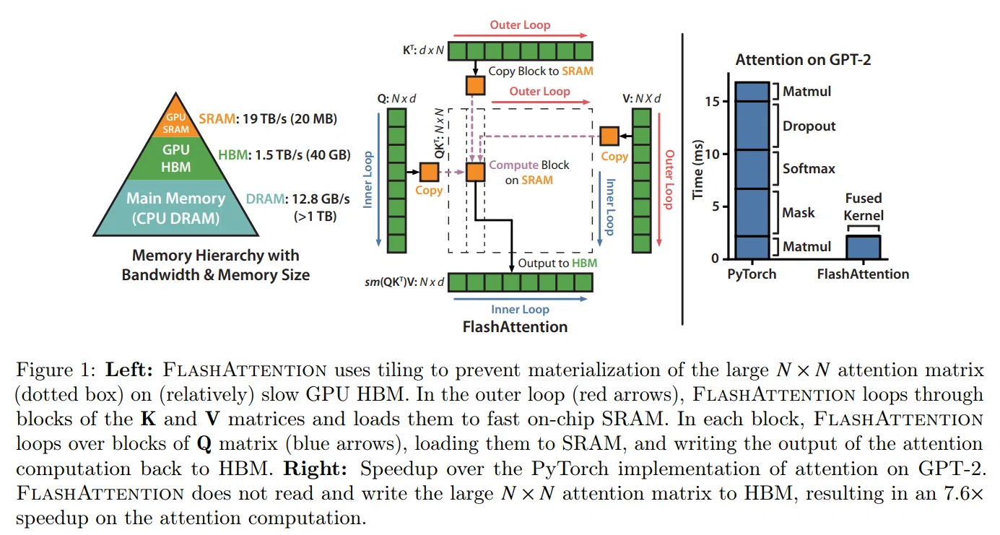
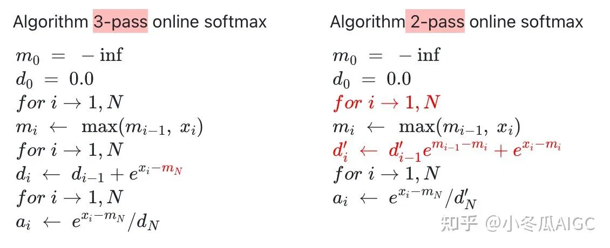
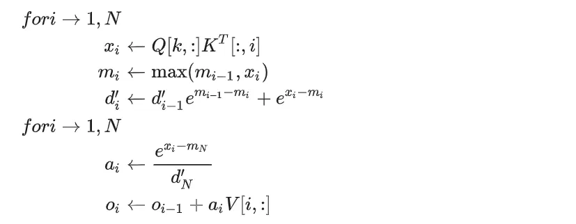
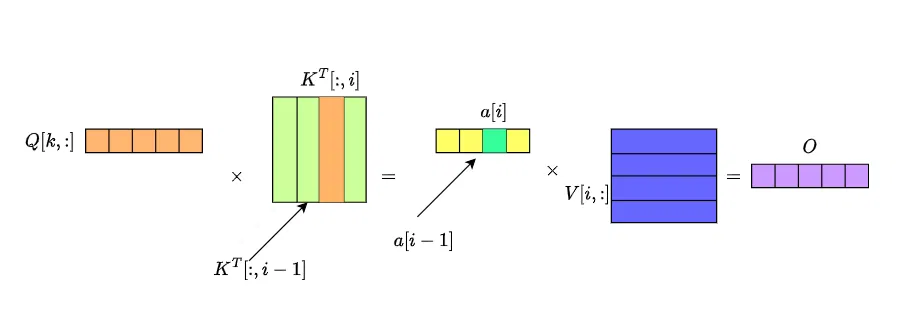
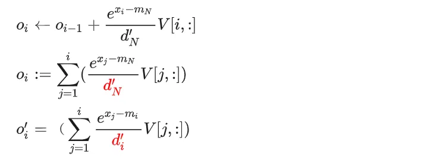
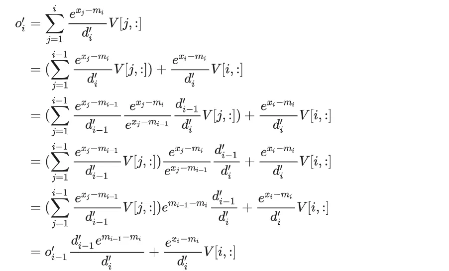
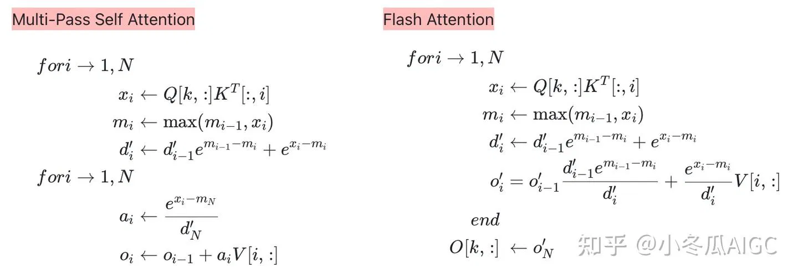
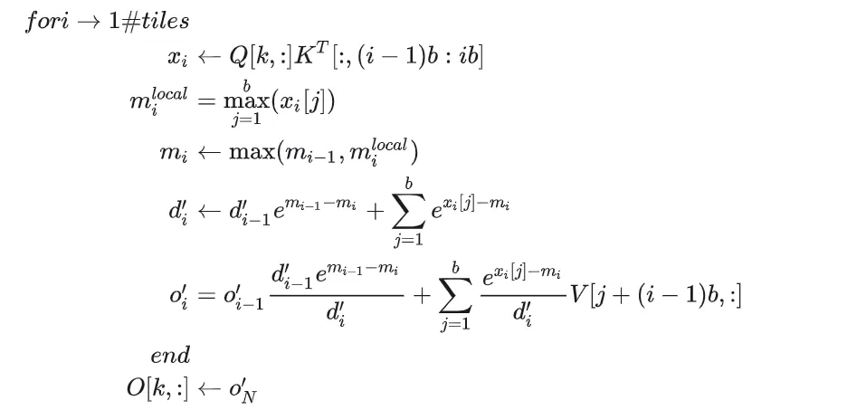

# 前言
本文介绍 FlashAttention。本文只关注 FlashAttention 前向推理部分的应用。
参考链接：Transformer 模型详解（图解最完整版） ， Attention is All You Need，Pytorch 版本的 Transformer 实现、一文了解 Transformer 全貌（图解 Transformer）、大模型推理加速：看图学 KV Cache、手撕大模型｜KVCache 原理及代码解析、FlashAttention 详解：为什么它能让大模型注意力计算又快又省显存？、Flash Attention 原理详解 (含代码讲解)、【手撕 LLM-Flash Attention】从 softmax 说起，保姆级超长文！！、《The Two-Pass Softmax Algorithm》
# 动机
Online Softmax 是 flash attention 的基础，可以提前学习了解下 Online Softmax ：【LLM 推理加速】Online Softmax。
Flash Attention 的核心思想： 分块 Tiling。
LLM 的 Attention 计算过程包含巨大的矩阵运算和 softmax，需要存储巨大的注意力矩阵，必然会导致 GPU 显存和 SRAM 之间的频繁数据交换。

上图左边，GPU 中存储是分层的，越往上层速度越快。GPU 显存以 GB 为单位，如 A100 显存 40GB，其速度只有 1.5T/s。而 SRAM 读写速度为 19TB/s，比 HBM 高一个数量级，但是空间只有 20M。GPU 需要将数据拷贝到 SRAM 才能进行运算，因此 HBM 和 SRAM 之间的数据传输成为吞吐量瓶颈。
在没 flash attention 算法的情况下，标准 Attention 会强制生成完整 N×N 注意力分数矩阵，中间张量反复「HBM 写入→再从 HBM 读出」。比如从 HBM 读取整块 Q、整块 K 到 SRAM，计算得到结果 S，需要写回 HBM；再读取 S，计算缩放和掩码 Smask，再写回到 HBM；再之后还需要计算 softmax。
上图右边，pytorch 实现的传统 attention，每一步都需要读写 HBM，效果要比 flash 差的多。
怎么解决呢，就是切块 Tiling。
但 attention 计算中，softmax 涉及到全局求和，为什么能切块呢？
flash attention 算法就是解决这个问题的。
总之，FlashAttention 是一种 IO-aware 的精确注意力计算算法，它通过分块计算和 online Softmax，避免显式存储巨大的注意力矩阵，从而大幅减少 GPU 显存读写。
# Flash Attention
Attention 注意力公式：
online softmax 解决了分块计算 softmax 的问题，可以再回顾一下 online softmax。online softmax 更新公式：
它解决了两个问题：
数值稳定：始终减去最大值，避免指数爆炸。
分块等价：虽然一块一块算，但最后结果和一次性 softmax 完全一致。
以下是 flash attention 算法：
# 2-Pass Online Softmax

左边是计算 三次 迭代计算 softmax 的过程，第一次计算最大值，第二次分母求和，第三次计算注意力得分 a_i 。
右边根据 online softmax 算法，将计算过程变成两次迭代。第一次迭代同时计算最大值和分母，第二次计算注意力得分 a_i 。
# 2-pass Self-Attention

以 2-Pass Online Softmax 为基础，增加 QK^T 计算，得到 2-Pass Self-Attention。
计算过程如下所示：

值得注意的是 O_i 的计算也是个累加的过程，直到计算出 O_N ，才算出一个最终值。
# 1-pass Self-Attention
下面需要思考的一个问题是，能不能让 O_i 也在第一次迭代中计算出来？

上方第一行 O_i 公式是二次迭代中的表达形式，第二行是它的定义形式。第三行 O^'_i 局部注意力输出的表达形式，当 i=N 时， o_i = o^'_i 。
接下来就是推导 O^'_i ：


# Flash-Attention(Tiling)
Flash Attention 分块形式：

# 后记
本博客目前以及可预期的将来都不会支持评论功能。各位大侠如若有指教和问题，可以在我的 github 项目 或随便一个项目下提出 issue，并指明哪一篇博客，看到一定及时回复！